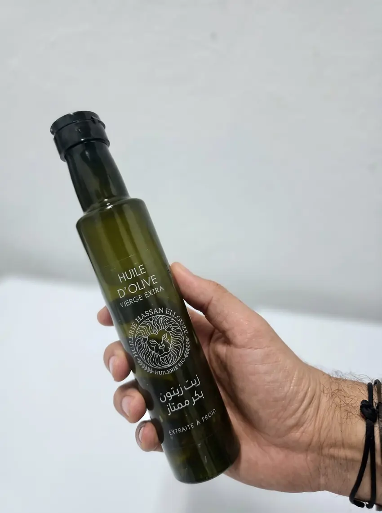

HUILERIE HASSAN ELLOUZE / TUNISIENOTRE ESSENCE ✦ SAVOIR-FAIRE
La nature a son
propre caractère.
Chez Huilerie Hassan Ellouze, nous souhaitons donner à l'huile d'olive la place qu'elle mérite : un produit de terroir, précieux et authentique.
Notre huile d'olive vierge extra biologique certifiée est disponible en bouteilles en verre, en plastique et en vrac pour les professionnels.
BioCertifiée
ExtraVierge
FroidExtraction